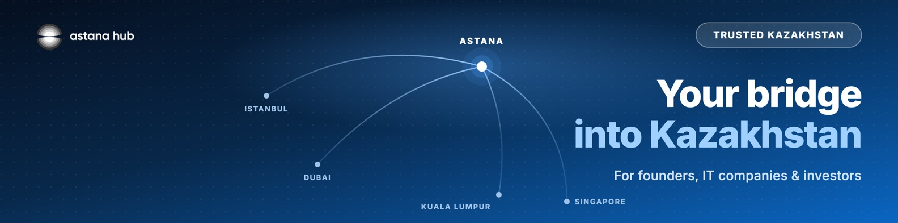
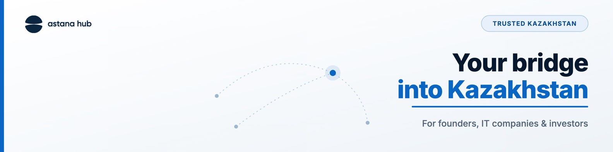

Chief Manager at Astana Hub | I help founders & IT companies relocate to Kazakhstan and reach the CIS, US, EU & MENA markets | Trusted Kazakhstan
About — было
Раздел пустой
About — станет
Полный текст «О себе» — ниже в превью, готов к копированию.
Experience — было
Одна строка должности, без описания
Experience — станет
5 лет в Astana Hub с прогрессией ролей + предыдущий опыт (НИТ, QazGITS) и образование — полная карьерная история.
Так профиль будет выглядеть вживую
Trusted Kazakhstan
From application to residencyWe handle the red tape — you build the company
Askhat Sabzhan Astana Hub
Chief Manager at Astana Hub | I help founders & IT companies relocate to Kazakhstan and reach the CIS, US, EU & MENA markets | Trusted Kazakhstan
Astana, Kazakhstan · 500+ connections
About
Most founders think the hardest part of moving to a new country is the product or the funding. It usually isn't. It's the paperwork — visas, residency, regulation — the quiet stuff that eats months before you hire your first person.
That's the part I handle.
I'm a Chief Manager at Astana Hub, Kazakhstan's largest tech hub and home of the Trusted Kazakhstan program. My background is in law, and over the past few years I've grown from Manager to Chief Manager inside the hub's Participant Regulation and Support Office — taking founders and IT teams from their first application all the way to full residency.
What that means in practice:
• I help foreign founders and companies become Astana Hub participants — and actually use the tax, visa and operational benefits that come with it
• I handle the regulatory side most people find painful: residency, compliance, the legal setup of doing business from Kazakhstan
• I stay the single point of contact, so founders spend their time building instead of chasing documents
Why Kazakhstan, and not Dubai, Yerevan or Belgrade? From one base you get access to the CIS, US, EU and MENA markets at once. For a founder choosing where to build next, that combination is hard to beat.
If you're a founder or an IT team thinking about where to base next, message me. Happy to walk you through how it actually works — visas, timelines, costs, the real picture.
#TrustedKazakhstan #AstanaHub #relocation #startups #Kazakhstan
Chief Manager, Participant Regulation and Support Office
Promoted through Manager → Senior Manager → Chief Manager over 5 years
The person founders and IT companies deal with when they turn the idea of "moving to Kazakhstan" into a registered, compliant, residency-ready business.
Take foreign founders and IT teams from first application to full Astana Hub residency — visas, registration, compliance and the legal setup of operating from Kazakhstan
Built and own the contractual and regulatory framework every resident signs onto — the legal backbone of the country's largest tech hub
Run legal due diligence on startups' and IT companies' business plans, assessing eligibility and compliance before they join the program
Automated and re-engineered internal regulation processes, cutting manual paperwork and turning a bureaucratic onboarding into a fast, predictable path
Designed gamification into participant workflows to make a legal process feel human instead of intimidating
Host webinars, networking sessions and digital events that turn isolated residents into a connected founder community
Single point of contact between participants and the hub on everything regulation-related
NIT
National Information Technologies (JSC)
2019 – 2021 · 2 yrs · Astana, Kazakhstan
Chief Specialist
Promoted through Specialist → Lead Specialist → Chief Specialist
Helped write the rules of Kazakhstan's digital economy — before moving to the other side of the table to help companies navigate them.
Drafted and shepherded national draft laws and regulatory initiatives in informatization and digital policy through approval with government bodies
Ran comparative legal analysis of international practice to benchmark Kazakhstan's rule-making against global standards
Provided the analytical and methodological backbone for the regulatory team's rule-making work
QG
QazGITS (LLP)
2018 – 2019 · 1 yr · Astana, Kazakhstan
Lawyer
Where the legal foundation was laid — contracts, compliance and corporate correspondence from the ground up.
Drafted and ran legal expertise on the full contract base of the company
Owned corporate legal correspondence end to end
Education
🎓
Bachelor of Law
M. Narikbayev KAZGUU University — Higher School of Law
Осталось доперсонализировать: один реальный кейс участника (страна фаундера, что было сложно, чем закончилось) и 1–2 строки «почему сам в этой работе» — добавим в About. Всё остальное готово к применению.
Шаг 1 · Профиль 2 из 3 · международные партнёрства
Sat Dyussekov
Chief International Partnerships Manager · Astana Hub
Сат заменяет Нурмахана (уволился). В Astana Hub он с сентября 2026 и уже работал здесь в 2022–2023: организовывал Digital Bridge Forum и программы акселерации в Сан-Франциско и Кремниевой долине. Угол профиля — международные партнёрства: фаундеры, IT-компании и инвесторы из MENA и Юго-Восточной Азии. Это дополняет Асхата (правовая сторона) и Лану (Digital Nomad Residency) и ложится на инвесторскую цепочку 03 лучше, чем профиль Нура.
Что меняем
Headline — было
Chief International Partnerships Manager at Astana Hub
Headline — станет
Chief International Partnerships Manager at Astana Hub | I help founders, IT companies & investors from MENA, SEA and beyond find their way into Kazakhstan | Trusted Kazakhstan
About — было
Резюме продажника: full sales cycle, account management, cross-functional coordination. Про Сата, но не про то, чем он полезен фаундеру.
About — станет
История в три хода: в 2022 собирал Digital Bridge и возил стартапы в Кремниевую долину → потом сам заходил на чужие рынки из Дубая → теперь помогает другим зайти в Казахстан. Ниже в превью, готово к копированию.
Обложка — было
Нет
Обложка — станет
Карта маршрутов: Стамбул, Дубай, Сингапур, Куала-Лумпур сходятся в Астане. Слоган «Your bridge into Kazakhstan» перекликается с Digital Bridge.
Experience и Skills — было
Текущая роль в две строки. В Top Skills: Construction Management, International Logistics.
Experience и Skills — станет
Роли переписаны под IT-аудиторию, логистика сжата до одной строки. Top Skills: International Partnerships, Business Development, Startup Ecosystems.
Так профиль будет выглядеть вживую

Sat Dyussekov Astana Hub
Chief International Partnerships Manager at Astana Hub | I help founders, IT companies & investors from MENA, SEA and beyond find their way into Kazakhstan | Trusted Kazakhstan
Astana, Kazakhstan · 500+ connections
Обложка профиля · 1584 × 396
Два варианта. Рекомендую первый: у Асхата и Ланы светлые обложки, а у Сата карта маршрутов выделяет ровно его роль, международное направление. Левый нижний угол пустой: туда LinkedIn ставит фото. PNG в 2× лежат в папке проекта: sat-banner-routes.png и sat-banner-light.png, исходник с кнопками экспорта — banner-sat.html.
A · Карта маршрутов · рекомендую
B · Светлый · единый стиль команды

Headline · два варианта
Основной · 176 из 220 · ценность вперёдChief International Partnerships Manager at Astana Hub | I help founders, IT companies & investors from MENA, SEA and beyond find their way into Kazakhstan | Trusted Kazakhstan
Альтернатива · 146 из 220 · в паре с обложкойYour bridge into Kazakhstan | International Partnerships at Astana Hub | Founders, IT companies & investors from MENA and SEA | Trusted Kazakhstan
About
I have spent most of my career on one job in different settings: getting two sides that do not know each other yet into the same room, and making sure the conversation turns into something real.
In 2022, at Astana Hub, that meant the Digital Bridge Forum: the plenary session with the President of Kazakhstan, panels with big tech, top VC funds and founders. It also meant taking Central Asian startups to San Francisco and Silicon Valley, where alumni of our program went on to raise $2M.
Then I switched sides. At 7Generation I took telecom solutions to clients across MENA, Central Asia and South-East Asia, from first meeting to pilot, and closed the company's first export deals. I know what it feels like to enter a market where nobody knows you yet.
Now I am back at Astana Hub as Chief International Partnerships Manager, working on Trusted Kazakhstan. My focus is founders, IT companies and investors looking at Kazakhstan from Dubai, Singapore, Istanbul, Europe or anywhere else, who want a straight answer before they commit.
What I can help with:
• Whether your company fits Astana Hub participant status, and which conditions come with it
• The right sequence: what happens before registration, which steps need you in person, what can run in parallel
• The right people: participants, partners and investors relevant to what you build
I would rather give you an honest picture than a pitch. If Kazakhstan is on your shortlist, message me.
#TrustedKazakhstan #AstanaHub #Kazakhstan #internationalpartnerships
Featured
AI & Digital Bridge
Пост Сата про форум 1–3 октября. После форума заменить на фото со стенда
The first point of contact for founders, IT companies and investors looking at Kazakhstan from abroad.
Work on Trusted Kazakhstan: help IT companies and founders land and scale from Kazakhstan
Get founders and teams set up as Astana Hub participants, starting with whether the activity fits and which conditions come with the status
Build partnerships with international funds, hubs and companies, with a focus on MENA and South-East Asia
Connect newcomers with participants, partners and investors inside the ecosystem
MT
MT Construction
Jan 2025 – Sep 2026 · Almaty, Kazakhstan
Chief Business Development Officer
Led business development for an 8-hectare industrial logistics portfolio with 10,000+ m² of warehouse space
Turned underused capacity into service contracts with international logistics partners by designing end-to-end offers for multinational clients
7G
7Generation
Feb 2024 – Jan 2025 · Dubai, UAE
Strategy & International Partnerships Lead
Took telecom solutions to B2B and B2G clients across three regions, from first meeting to pilot.
Converted 4 international leads from MENA, Central Asia and South-East Asia into pilot-stage projects, $40M+ in potential deal value
Closed the company's first export deals, in the DRC and Kuwait, worth $10M+
Represented the company at MWC Shanghai, ISS Singapore and SAMENA Council Dubai, generating 300+ B2B and B2G leads
Built the sales dashboards and pipeline tracking in Zoho CRM and Bitrix
AH
Astana Hub
Apr 2022 – Jan 2023 · Astana, Kazakhstan
Investments and Export Manager
Worked on the international side of the hub: forums, delegations and programs abroad.
Ran executive protocol for the Digital Bridge Forum, including the plenary session with the President of Kazakhstan, C-level speakers from big tech and top VC funds
Launched the Hero Training Program in San Francisco, funded by the World Bank, for startups across Central Asia
Designed and managed the Venture Acceleration Program in Silicon Valley; alumni raised $2M from investors
Built partnerships with funds, accelerators and tech hubs in the UAE, Singapore and the USA; hosted foreign delegations, including the Turkish government
Prepared the Google for Startups cohort to pitch to foreign guests and global companies
EX
Expo 2020 Dubai
Oct 2021 – Apr 2022 · Dubai, UAE
Volunteer
Visitor engagement, event operations and logistics at the World Expo
Education
🎓
BEng, Mechanical Engineering with Oil & Gas Studies
University of Aberdeen · 2:1 Honours, top 10% of class
2017 – 2021 · Aberdeen, United Kingdom
🎓
Bachelor of Business Administration, Economics
Synergy University
2017 – 2021
🎓
Foundation, Engineering
Cambridge Education Group
2016 – 2017
Languages
RussianNative
EnglishProfessional
Kazakhуточнить
Skills
International PartnershipsBusiness DevelopmentStartup EcosystemsStrategic Account ManagementInvestor RelationsNegotiationEvent & Forum ManagementStakeholder ManagementMENA MarketsSouth-East Asia Markets
На подтверждение: резюме и LinkedIn расходятся. Свёл к одной версии, но пусть Сат проверит, прежде чем вносить.
1) 7Generation: в резюме Дубай и «Strategy & International Partnerships Lead», в LinkedIn Астана и «International Partnerships Lead». Поставил версию резюме.
2) Astana Hub 2022: в резюме «Senior Business Development Manager», в LinkedIn «Investments and Export Manager». Поставил версию LinkedIn — должность внутри Хаба лучше сверить с HR.
3) Экспортные сделки в ДРК и Кувейте на $10M+ есть только в резюме, в LinkedIn их нет. Цифра сильная, но её лучше подтвердить.
4) Казахский указан в резюме, в LinkedIn отсутствует. Уровень неизвестен.
5) Стаж: в резюме «5+ лет», в LinkedIn «over four years». В новом About стаж не называется.
6) Опечатка в сертификатах LinkedIn: «McKisney» вместо McKinsey.
7) Фото нет — стоит заглушка с инициалами. Нужно фото Сата: обложка тёмная, лучше портрет на светлом или нейтральном фоне.
Шаг 1 · Профиль 3 из 3 · флагман команды
Lana Nurkassynova
Project Manager · Participant Support Office · Astana Hub
Project Manager at Astana Hub | I help international IT talent & founders get Digital Nomad residency and set up in Kazakhstan | Trusted Kazakhstan
About — было
Раздел пустой
About — станет
Угол «я лично оформляю вашу визу и компанию» — ниже в превью, готово к копированию.
URL — было
/in/lana-nurkassynova-643a642b5 (хвост)
URL — станет
/in/lana-nurkassynova (чистый — поменять в настройках LinkedIn)
Так профиль будет выглядеть вживую
Trusted Kazakhstan
From application to residencyWe handle the red tape — you build the company
Lana Nurkassynova Astana Hub
Project Manager at Astana Hub | I help international IT talent & founders get Digital Nomad residency and set up in Kazakhstan | Trusted Kazakhstan
Astana, Kazakhstan · 500+ connections
About
If you're an IT specialist or a founder thinking about Kazakhstan, there's a good chance your application crosses my desk.
I'm a Project Manager at Astana Hub, in the Participant Support Office, and I run the programs that actually bring international tech talent into the country.
Day to day:
• I lead the Digital Nomad Residency & Visa program end to end — reviewing applications, assessing IT skills, running interviews, issuing the paperwork for your residence permit, and staying on your case until it's done
• I curate One Stop Shop — registering foreign and local companies in Kazakhstan and Astana Hub, together with partners like Grata, Konsu, Pactum and WPK
• I handle the government side (eGov, state bodies, the quasi-public sector) so you don't have to
Before Astana Hub I worked at the Ministry of Industry and Construction on bilateral cooperation and protocol — coordinating intergovernmental commissions and agreements with a dozen countries. That taught me how to move things through institutions, and how to work across borders and languages (I work in Russian, English, Spanish and a bit of Chinese).
This is part of a national pilot, launched on the President's mandate, to bring foreign IT specialists from priority sectors into Kazakhstan. If that's you — a developer, a founder, a team — message me. I'll walk you through exactly how the visa, residency and company setup work.
#TrustedKazakhstan #AstanaHub #DigitalNomad #relocation #Kazakhstan
Featured
Digital Nomad Residency
Резидентство для IT-специалистов — её главный актив
One Stop Shop
Регистрация компаний в Astana Hub
Trusted Kazakhstan
Программа / one-pager
Experience
AH
Astana Hub International Tech Park
Feb 2025 – present · Astana, Kazakhstan · Full-time
Project Manager, Participant Support Office
If you're an IT specialist or founder coming to Kazakhstan, your application probably crosses my desk.
Lead the Digital Nomad Residency & Visa program end to end: application moderation, IT-skill assessment, interviews, issuing residence-permit petitions, full case support to completion
Curate One Stop Shop — registering foreign and local companies in Kazakhstan and Astana Hub with partners Grata, Konsu, Pactum and WPK
Own the government-relations side: eGov integration, state bodies, the quasi-public sector
Part of a national pilot on the President's mandate to attract foreign IT specialists from priority sectors
Run customers@ correspondence, offline consultations and an international referral program for connectors
MI
Ministry of Industry and Construction of Kazakhstan
Jan 2024 – Feb 2025 · Astana, Kazakhstan
Specialist, Bilateral Cooperation & Protocol
Worked the diplomatic side of bringing business and investment into Kazakhstan.
Managed bilateral relations with a dozen countries (China, UK, UAE, Netherlands, Spain, Serbia and more) across industry, construction and special economic zones
Organized intergovernmental commissions; coordinated protocols, roadmaps and agreements signed at the highest level
Led negotiations and protocol meetings with foreign government bodies and companies
Ran business forums and round tables; worked on localizing foreign companies and attracting investors
GC
Government for Citizens (State Corporation)
2020 – 2022 · Astana / Karaganda, Kazakhstan
Specialist
Front-line public service: document intake and registrations, HR records, government database management (enbek.kz)
Education
🎓
Bachelor — International Relations
Astana International University
2020 – 2024 · Astana, Kazakhstan
🎓
Translation Studies — Linguist / Translator
College of Foreign Languages
2017 – 2020 · Kazakhstan
Languages
KazakhNative
RussianC2
EnglishB2
SpanishB1
ChineseA2
Skills
Digital Nomad ResidencyGovernment RelationsIT Talent RelocationCompany RegistrationStakeholder ManagementeGov / Public ServicesProject ManagementAgile & ScrumCross-cultural CommunicationBusiness Correspondence
Сильная сторона профиля: Лана буквально оператор Digital Nomad Residency и регистрации компаний — самый «целевой» человек команды под релокейт-питч, плюс английский B2 и ещё 3 языка. Осталось: почистить URL (убрать хвост -643a642b5 в настройках LinkedIn) и подтвердить точное название роли/офиса.
Шаг 3 · Аутрич · целевая аудитория
Кого привлекаем через профили команды
Целевая аудитория
Кого привлекаем через профили команды. Outbound — ручной аутрич по трём аудиториям: фаундеры → Сат, IT-компании → Асхат, инвесторы → Сат. Inbound — IT-специалисты приходят сами на контент Ланы за Digital Nomad Residency. Здесь — кого бьём и по каким сигналам искать. Сами цепочки сообщений, правила запуска и воронка — во вкладке Воронка.
Язык аутрича: русскийПрофили: английскийОтправка: вручную (ToS)Ритм: 3 касания, дальше стоп
Сегменты аудитории
Outbound · цепочка 01 · ведёт Сат
IT-фаундеры и стартап-CEO
Основатели ранних и растущих стартапов, 1–50 чел. Сравнивают юрисдикции, считают экономику
Оффер: Base Camp (бесплатно, дедлайн 10 августа), компания за 7 дней, 0% налог на IT, рынки СНГ, Китая и ЮВА
Outbound · цепочка 02 · ведёт Асхат
CEO и руководители IT-компаний
CEO/CTO/COO компаний 11–200 чел, думают о второй базе для части контрактов и команды
Оффер: вторая база, 0% налог на IT, статус для команды, IT-экспорт
Outbound · цепочка 03 · ведёт Сат
Инвесторы и бизнес-ангелы
Партнёры фондов и ангелы, ищут пайплайн вне перегретых рынков. Ценят конкретику
Оффер: дилфлоу региона, доступ к резидентам, питч-сессии, Base Camp
Inbound · не аутрич · ведёт Лана
Senior IT-специалисты и digital nomads
Сильные разработчики/тимлиды, ищут легальный долгосрочный статус. Приходят сами на контент, не по цепочке
Оффер: Digital Nomad Residency (ВНЖ 10 лет), РВП, сопровождение до статуса
Уже уехали, сравнивают юрисдикции — самый горячий сегмент. Ищем по локации + языку профиля.
Инвесторы · цепочка 03
География не ограничена: Лондон, Сингапур, Дубай, США, СНГ.
Ищем не по локации, а по портфелю и фокусу: emerging markets, вертикали, стадии, СНГ-бэкграунд.
Язык
Аутрич на русском (диаспора), профили и посты на английском.
LinkedIn заблокирован в РФ → бьём по тем, кто уже за границей.
Примеры профилей (архетипы)
Это примеры «идеального адресата», а не конкретные люди — реальных ищем в LinkedIn / Sales Navigator по «сигналу» в каждой карточке. Внизу карточки — кто пишет и по какой цепочке. Карточка с пометкой inbound — исключение: этому человеку мы не пишем, он приходит сам на контент.
💻
Фаундер SaaS-стартапа
CEO · 8 чел · Дубай
ИндустрияB2B SaaS / Fintech
Ситуациярелоцировался из РФ, ищет налог. оптимизацию
Сигнал: Partner/Investor в заголовке, портфель в emerging markets, СНГ-бэкграунд
→ Сат · цепочка 03дилфлоу · подборка резидентов
👼
Бизнес-ангел
Angel · pre-seed · Дубай
Фокусранние стадии, СНГ-основатели
Ситуациясмотрит регион, хочет интро с фаундерами
Сигнал: Angel/Investor, экс-фаундер, интерес к Центральной Азии, активность в стартап-темах
→ Сат · цепочка 03питч-сессии · Base Camp
Дальше: тексты сообщений, лимиты LinkedIn, порядок запуска и счётчик отправки — во вкладке Воронка. Здесь фиксируем только портрет аудитории для согласования.
Шаг 3 · Аутрич · исполнение
Согласованный вариант
Как устроен аутрич
Тексты приведены к редакции постов от 10 сентября: без «0% налога» в лид-строке, без «$1,8 млрд», вместо Base Camp (прошёл) — AI & Digital Bridge 1–3 октября. Здесь — общий принцип: кто кому пишет, по каким правилам и с каким ритмом. Конкретные люди, тексты под каждого, статусы и воронка — в закрытой части (ссылка внизу), потому что там реальные персональные данные, а эта страница публичная.
Согласованный вариант
Цепочка
Аудитория
Ведёт
Оффер
01
Фаундеры IT-стартапов (1–50)
Сат
понятный маршрут выхода · регистрация около недели · рынки СНГ, Китая и ЮВА · AI & Digital Bridge
02
CEO / руководители IT-компаний (11–200)
Асхат
вторая база · статус участника и его условия · статус для команды · IT-экспорт
03
Инвесторы и бизнес-ангелы
Сат
дилфлоу региона · доступ к компаниям-участникам · питч-сессии
—
IT-специалисты (Digital Nomad Residency)
Лана
inbound, не аутрич — приходят сами на контент
Позиционирование: ничего не продаём. Astana Hub — инновационный кластер Казахстана, его KPI — число компаний-участников и объём IT-экспорта, поэтому участие и сопровождение бесплатные. Рамка — возможность и рост («вторая база», «выход на рынки»), не переезд. Термины «технопарк» и «государственный» не используем, вместо «резидент» говорим «участник». Режим не подаём одной цифрой в ставке: полезнее говорить об условиях, которые компании нужно стабильно выполнять.
Общие паттерны
Ритм · 3 касания
Коннект → сообщение 1 (в день принятия) → follow-up 1 (через 3–4 дня) → follow-up 2 (через 7–10 дней). Дальше стоп.
Любой ответ, даже «не сейчас», выключает шаблоны — дальше вручную.
Лимиты · без Premium
Персональных записок к коннекту — 3–5 в месяц. Поэтому коннект шлём без записки, а первое сообщение — сразу после принятия.
Коннектов не больше 10–15 в день на аккаунт.
Правила · ToS
Пишет вручную сам участник — не бот, не массовая рассылка. 1 контакт = 1 участник = 1 цепочка.
Перед отправкой — одна живая деталь из профиля своими словами.
Согласованные формулировки
Редакция от 10 сентября 2026, приведена к тону постов клиента (ждёт подтверждения). Connect-заметки уложены в лимит 200 знаков (без Premium). {Имя} подставляется вручную. Полные цепочки под каждого лежат в закрытой части.
Connect · цепочка 01 · Сат165 / 200
{Имя}, добрый день! Я в Astana Hub отвечаю за международные партнёрства: помогаю фаундерам и IT-компаниям разобраться с базой в Казахстане. Буду рад знакомству.
Connect · цепочка 02 · Асхат185 / 200
{Имя}, добрый день! Я юрист в Astana Hub, инновационном кластере Казахстана. Сопровождаю IT-компании: регистрация юрлица, статус участника, статус для команды. Буду рад знакомству.
Connect · цепочка 03 · Сат186 / 200
{Имя}, добрый день! Я в Astana Hub отвечаю за международные партнёрства: 2 200+ компаний-участников, единорог региона Higgsfield AI. Если Центральная Азия на радаре, будем на связи.
Ответ на «а в чём подвох?» · во всех цепочкахзаготовка
Astana Hub, инновационный кластер Казахстана. Наша задача: рост IT-экосистемы и IT-экспорта страны. Мы зарабатываем не на участниках, KPI кластера это количество компаний-участников и объём экспорта, поэтому участие и сопровождение бесплатные.
AI & Digital Bridge · как подаватьсрочно · 1–3 октября
Base Camp прошёл (две группы в августе, заявки закрылись 10 августа), форма с UTM больше не актуальна. Ближайший повод — форум в Астане. Ссылку на регистрацию форума и подтверждение стенда ждём от клиента, пока в тексте её нет.
{Имя}, вот что могу предложить предметно.
С 1 по 3 октября в Астане проходит AI & Digital Bridge. Мы там будем и помогаем фаундерам на месте: проверить, проходит ли деятельность, разобрать последовательность шагов и закрыть те части, которые сложно сделать удалённо.
Если планируете быть на форуме, напишите, и найдём удобный слот. Утро обычно свободнее.
Закрытая часть — конкретные люди
🔒 Приватная страница аутрича
Сат (92 контакта, переданных от Нура), Асхат (24) и Лана (82): воронка, статусы по стадиям, карточки контактов, готовые цепочки и заметки. У Сата карточки разложены по тому, где контакт остановился у Нура: тёплая передача, повторный заход или обычная цепочка. Статусы Нура лежат внизу в свёрнутом архиве. Страница под паролем и зашифрована — реальные персональные данные на публичный дашборд не выносим.
Пароль выдаётся отдельно. Статусы и заметки синхронизируются через облако между всеми, у кого есть пароль.
Цифры в цепочках после правки: компаний-участников — 2 200+, свыше 490 с иностранным участием, экспорт IT-услуг в 111 стран, единорог региона — Higgsfield AI. Убрано: «$1,8 млрд IT-экспорта» (публичного источника так и не нашлось), «0% налог на IT» в лид-строке, «ВНЖ на 10 лет» у Ланы, Base Camp и его форма.
Требует решения клиента: в постах дважды стоит «over 500 international companies», в пресс-релизе и цепочках — «свыше 490». Нужна одна цифра. Также в цепочке 04 снят срок «10 лет» и добавлено уточнение, что это вид на жительство, а не постоянное резидентство: подтвердить, можно ли называть срок.
Шаг 3 · Реклама + аутрич · кампания
Кампания LinkedIn · 1–3 октября 2026
AI & Digital Bridge
Три дня в Астане, куда съезжаются фаундеры. Для пилота это ближайший и единственный живой повод: не «приезжайте на месяц», а «вы всё равно будете здесь, давайте закроем вживую то, что неудобно решать удалённо». Привлекаем через рекламу и аутрич с профиля Сата: в 2022 он сам организовывал Digital Bridge, это готовый повод для разговора.
1–3 октября · АстанаНоситель: профиль СатаДо форума 3 недели
Base Camp закрыт. Две группы прошли в августе, заявки закрылись 10 августа, форма с UTM больше не работает. Эта вкладка перестроена под форум. Ждём от клиента: подтверждение стенда, ссылку на регистрацию форума (в сообщениях её пока нет) и подтверждение, что Сат берёт входящие в личку и будет на стенде.
Что предлагаем на форуме
Проверить, проходит ли деятельность под приоритетные виды в ИКТ
Разобрать последовательность шагов под конкретную компанию, а не пересказать документ
Закрыть очные шаги: идентификация и электронная подпись, которые сложно сделать из-за рубежа
Познакомить с экосистемой: участники, инвесторы, люди, которые ведут эти кейсы каждый день
Разговор ведут те, кто занимается этим ежедневно, а не стенд с брошюрами
Формулировки взяты из поста про форум (исходно Нура, теперь переписан под Сата): «проверить, проходит ли деятельность, разобрать сетап с людьми, которые ведут такие кейсы каждый день, и понять, как выглядят следующие шаги». Отдельно он выделяет помощь с очной идентификацией — это и есть главный аргумент «приходите на стенд», потому что удалённо этот шаг не закрыть. Про ставку налога в оффере сознательно не говорим.
Гео и сообщение под каждый рынок
Дубай
Русскоязычные фаундеры в ОАЭ. Уже за границей, сравнивают юрисдикции, привыкли к медленным банкам.
«Открытие компании и счёта в ОАЭ тянется. Мы будем в Астане 1–3 октября, можно поговорить вживую.»
Кипр
IT-диаспора в Лимассоле. Тот же профиль, свой набор сложностей с банками и отчётностью.
«Если сейчас сравниваете юрисдикции, 1–3 октября в Астане удобный момент задать практические вопросы.»
СНГ + хабы
Релокант-хабы: Тбилиси, Ереван, Стамбул, Белград. Самый широкий охват, ближе всего лететь.
«Пока одни выбирают, где осесть, другие уже разбираются с базой. Три дня, чтобы посмотреть вживую.»
Угол «жара +45» больше не работает. В августе он держал всю кампанию, в октябре в Дубае и Лимассоле уже комфортно, а в Астане холодает. Новый угол — не погода, а присутствие: очные шаги, которые нельзя закрыть удалённо, и живой разговор вместо переписки.
Кому показываем (целевая аудитория)
Приоритет 1
Фаундеры стартапов
Должности: Founder, Co-Founder, CEO, Основатель Компания: 1–50 человек Сферы: Software, IT Services, Fintech, Gaming, AI Боль: статус участника, условия режима, выход на рынки
Приоритет 2
Руководители IT-компаний
Должности: CEO, CTO, COO, Managing Director, Owner Компания: 11–200 человек Сферы: IT Services, Software, Outsourcing Боль: IT-экспорт, условия режима, статус команды
Главный фильтр во всех кампаниях — язык профиля = русский. LinkedIn заблокирован в РФ, поэтому ядро — диаспора, которая уже уехала и сравнивает юрисдикции. Спецификация для маркетологов переписана под форум: forum_audience_brief.md — календарь флайта, обновлённые гео-углы, новый сегмент C (компании, уже работающие в Казахстане) и UTM-метка digitalbridge_kz_2026. Августовский basecamp_audience_brief.md помечен как архив.
Как идёт реклама
Формат — Thought Leader Ads: рекламный кабинет Astana Hub спонсирует пост Сата. Это реклама «от его лица», а не безличный баннер бренда, и ровно в логике пилота (профили сотрудников как канал). Раздельные кампании по гео (Дубай / Кипр / СНГ) × сегменту, чтобы видеть, что конвертит.
Что меняется под форум: флайт короткий, до 3 октября, дальше креатив мёртвый. Разгонять имеет смысл именно пост Сата про форум («Digital Bridge изнутри» на русском и «If you are coming to AI & Digital Bridge» на английском) — оба лежат на вкладке «Контент». Логично поставить его в органику в ближайшие дни, посмотреть отклик и спонсировать то, что зайдёт.
Аутрич с профиля Сата — воронка
Connect→Сообщение 1→Follow-up 1→Follow-up 2→Встреча на форуме
Ниже — connect-заметки под форум, все уложены в лимит 200 знаков (Premium на аккаунтах нет). Подставить имя и одну деталь из профиля. Полные цепочки с сообщением 1 и двумя follow-up лежат на вкладке «Аутрич» и в закрытой части; там же блок про форум, который отправляется только после явного «да, расскажите». Шаблоны переписаны под форум: forum_outreach_messages.md — семь записок в лимите 200 знаков, сообщения 1 под фаундера и под IT-компанию, оба follow-up и блок про форум. Августовский basecamp_outreach_messages.md помечен как архив.
Варианты под аудиторию — ОАЭ · Кипр · СНГ
ОАЭ (Дубай)
Угол: медленные банки и сроки → живой разговор в Астане.
Вариант 1 · вы будете там · 183/200{Имя}, будете в Астане 1–3 октября на AI & Digital Bridge? Я в Astana Hub, помогаю фаундерам разобраться с базой в Казахстане. Если регион в шорт-листе, удобно поговорить вживую.
Вариант 2 · банки и сроки · 194/200{Имя}, знаю, как в ОАЭ тянется открытие компании и счёта. Я в Astana Hub, помогаю фаундерам с базой в Казахстане. 1–3 октября будем на AI & Digital Bridge в Астане, можно поговорить вживую.
Вариант 1 · банки · 184/200{Имя}, на Кипре хорошо, но с банками вечно отдельная история. Я в Astana Hub, помогаю фаундерам с базой в Казахстане. 1–3 октября мы на AI & Digital Bridge в Астане. Будете рядом?
Вариант 2 · сравнение юрисдикций · 182/200{Имя}, если сейчас сравниваете юрисдикции, 1–3 октября в Астане проходит AI & Digital Bridge. Я в Astana Hub, разбираю с фаундерами их конкретные случаи. Буду рад познакомиться.
СНГ · релокант-хабы
Угол: конкуренты уже двигаются, ближе всего лететь.
Вариант 1 · конкуренты · 192/200{Имя}, пока одни выбирают, где осесть, другие уже разбираются с базой в Казахстане. Я в Astana Hub веду эти разговоры. 1–3 октября мы на AI & Digital Bridge в Астане. Буду рад знакомству.
Вариант 2 · оператор и помощь · 182/200{Имя}, я в Astana Hub помогаю фаундерам открывать компании в Казахстане: маршрут, сроки, банк, команда. 1–3 октября будем на AI & Digital Bridge в Астане. Вдруг окажется в тему.
Универсальный — без привязки к локации
Безопасный вариант на любого фаундера, когда гео из профиля непонятно.
Connect-заметка · универсальная · 184/200{Имя}, вы ведь делаете {продукт}. Я в Astana Hub помогаю IT-фаундерам разобраться с базой в Казахстане. 1–3 октября мы на AI & Digital Bridge в Астане. Если тема близка, напишите.
Критический путь — календарь. Сегодня 24 сентября, форум 1–3 октября: неделя на всё. Нурмахан уволился, кампания переходит на Сата. Порядок такой: пост Сата про форум в органику в ближайшие 1–2 дня, затем короткий рекламный флайт, аутрич идёт параллельно. Полная цепочка (7–10 дней) до форума уже не успеет, поэтому приглашение на стенд стоит прямо в первом сообщении Сата. Самые быстрые — 16 контактов, которые отвечали Нуру: им тёплая передача с запиской со ссылкой на Нура. После 3 октября вся эта вкладка снова обнуляется, и нужен следующий повод.
Шаг 2 · анализ конкурентов
Анализ LinkedIn · скрейп Apify · июнь 2026
Что постят конкуренты — и где пустота
Разобрали посты IT Park Uzbekistan и самого Astana Hub. Вывод: обе страницы делают только институциональный контент сверху вниз. Человеческого, практического, фаундер-facing контента не делает никто. Эту нишу и занимают личные профили команды.
Цифры из скрейпа
94%
вовлечения — это лайки. Комменты 2%, репосты 4%
18 / 4
постов в неделю: IT Park / Astana Hub
0
хэштегов используют оба — ниша свободна
×2
Astana Hub берёт качеством: вдвое больше вовлечения при меньшем числе постов
IT Park Uzbekistan vs Astana Hub
IT Park Uzbekistan конкурент
Постов / неделю~18
Средняя длина1161 симв.
Лучший форматкарусель (36 avg)
Вовлечение / пост~34
О чёмпартнёрства, MoU, министры, экспансия в MENA
Astana Hub бенчмарк
Постов / неделю~4
Средняя длина1145 симв.
Лучший форматодиночное фото (76 avg)
Вовлечение / пост~63
О чёмAI (alem.ai, OpenAI, NVIDIA), визиты, GITEX
Что лучше заходит
Визуал бьёт текст — текст-онли худший формат у обоих. Сильное одиночное фото с конкретным человеком/брендом или карусель.
Конкретика даёт пик — имена и цифры (OpenAI, NVIDIA, $4.3B экосистема). Наш аналог: реальные резиденты, страны фаундеров, кейсы.
Комменты и репосты редки — их вызывают выгода (налоговые льготы) и громкие сделки. Никто не задаёт вопросов аудитории — а это даёт ответы и заявки.
Качество важнее объёма — Astana Hub при 4 постах/нед обгоняет IT Park с 18. Один сильный пост в неделю работает.
Лучший обучающий пример — пост StartupBase (стартап-направление IT Park). Не топ по абсолютным лайкам, но это ровно тот фаундер-facing формат, который нужен личным профилям: хук-вопрос, обращение к аудитории, ценность буллетами, ясный CTA со ссылкой. По этому шаблону собраны посты во вкладке «Контент».
Saudi Arabia might be the next market for your startup
Thinking about expanding beyond Uzbekistan but not sure where to start?
Over the past few years, the Middle East has become one of the biggest startup hubs in the world. Investors, corporations, and new opportunities are all converging in the region.
And here's the good news: IT Park Uzbekistan's office in Saudi Arabia is now onboarding startups.
Together, we can:
• Connect with potential partners
• Reach regional investors
• Explore market opportunities across the region
If you want the Middle East to be your business's next destination, apply to the Open Call today.
→ Apply here: [link]
Хук-вопрос в первой строке — «might be the next market for your startup». Обращение к аудитории, не заголовок пресс-релиза.
«Your startup», «you» — пост про читателя, а не про себя. У конкурентов на корпостранице этого почти нет.
Ценность буллетами — 3 конкретных выгоды, легко сканировать.
Один ясный CTA со ссылкой — apply here. Не «следите за нами».
Короткие абзацы — воздух, читается с телефона.
Для сравнения: топ по абсолютному вовлечению (177 лайков) — пост Astana Hub про сделку с Firebird AI / NVIDIA на $10 млрд. Урок оттуда: конкретные имена и цифры дают пик. У нас аналог — реальные резиденты, страны фаундеров, сроки и суммы.
Наша стратегия: занять пустоту
Корпостраницы = макро (политика, форумы, цифры). Личные профили команды делают то, чего конкуренты не делают: микро, практику, человека. Именно это привлекает участников.
How it works — объяснялки виз/регистрацииResident stories — кейсы фаундеровInside the hub — закулисьеMyth vs reality — сравнения юрисдикцийBase Camp build-upOperator's take — личное мнение
Угол на каждого: Асхат — правовая сторона и compliance · Сат — международные партнёрства и форум · Лана — Digital Nomad Residency и истории (флагман). Ритм: 1 пост/неделю с профиля, разнесены по дням.
Полный план с календарём на 4 недели и do/don't — в файле content_plan.md. Готовые посты под копипаст — во вкладке «Контент».
Шаг 2 · посты в редакции клиента
19 постов · версия клиента от 10 сентября
Контент для команды
Здесь лежит отредактированная клиентом версия всех 19 постов, она заменила прошлую редакцию. Тон стал экспертным и осторожным: вместо «0% налог» и «ВНЖ на 10 лет» появились условия режима (порог 90% дохода, ежегодная отчётность с аудитором, требование экспортной ориентации с 2029 года) и прямая оговорка, что первоисточник важнее поста. Два блока: личные посты на русском и продуктовые на английском. Два поста помечены цветной рамкой и требуют решения до публикации.
Два поста нельзя ставить в очередь как есть. 1) У Ланы английский пост-история остался незаполненным шаблоном со скобками [country], [field], [real concern in his words] — нужен реальный кейс с разрешением или пост убираем, тогда постов 18. 2) Нурмахан уволился, его посты заменены постами Сата. Два из них про AI & Digital Bridge (RU и EN): форум 1–3 октября, публиковать в ближайшие 1–2 дня. Все три поста помечены рамкой ниже.
Аутрич синхронизирован с постами. В постах больше нет «0% налога», «ВНЖ на 10 лет» и «$1,8 млрд экспорта», а пост Ланы прямо говорит: это residence permit, а не постоянное резидентство. Цепочки приведены к тому же тону, чтобы фаундер не получал два разных рассказа от одной организации: убраны те же формулировки, «резидент» заменён на «участник», Base Camp (прошёл) заменён на AI & Digital Bridge 1–3 октября. Подробности на вкладке «Аутрич».
Осталось решить: в постах дважды «over 500 international companies», в пресс-релизе и цепочках — «свыше 490», нужна одна цифра. И подтвердить, можно ли называть срок «10 лет» по программе Ланы: из цепочки 04 он снят до ответа клиента.
Посты Сата (6 шт.) написаны заново, в тоне клиентской редакции. Опираются только на факты из его резюме и LinkedIn: Digital Bridge 2022, программы в Кремниевой долине и Сан-Франциско, 7Generation, MWC Шанхай, ISS Сингапур, SAMENA Дубай. Выдуманных кейсов нет. Выводы вроде «инвесторы редко решали после одной встречи» сформулированы из его опыта. Перед публикацией их должен прочитать и подтвердить сам Сат, это его голос. Старые посты Нура сохранены в nur_posts_archive.md.
Личные посты · на русском · личный бренд
9 постов · личные истории
Личный бренд команды
Посты от первого лица: кем участник был раньше, почему он в Astana Hub и что реально делает. В новой редакции меньше продажи и больше конкретики: Асхат объясняет условия режима и честно оговаривает, что может ошибиться в интерпретации; Сат (сменил Нурмахана) рассказывает, как вернулся в Хаб после того, как сам заходил на чужие рынки; Лана — про то, что люди приходят не за налогами, а за горизонтом планирования.
▶ Асхат — юрист, который оказался по другую сторону правил 3 поста · RU
Личный брендтекст
Юрист, который оказался по другую сторону правил
Семь лет назад я писал нормативные документы в госоргане. Законопроекты, согласования, сравнительный анализ того, как похожие вещи устроены в других странах.
Работа важная, и я многому там научился. Но со временем понял одну вещь: когда пишешь правила, редко видишь человека, который потом по ним живёт. В документах есть «заявитель» и «субъект». В жизни есть фаундер, у которого команда, продукт, сроки и вполне конкретные вопросы.
Сейчас я работаю в Astana Hub и помогаю компаниям разобраться с тем, как открыть и правильно выстроить базу в Казахстане. И мне эта сторона работы нравится больше.
Например, в правилах можно увидеть срок регистрации около семи дней. Но человеку важен не только этот срок. Ему нужно заранее понимать, что происходит до регистрации, где потребуется личное присутствие и какие шаги нельзя оставлять на последний день.
Вот этим я и занимаюсь. Не пересказываю документ, а перевожу его на нормальный человеческий язык и помогаю собрать последовательность действий под конкретную компанию.
Если рассматриваете Казахстан как вторую базу, можете написать. Если ваш кейс сюда не подходит, я тоже скажу прямо.
#Kazakhstan #AstanaHub #ITbusiness
Экспертизатекст
Три вопроса, которые мне задают почти каждую неделю
Разговор с фаундером обычно начинается не с документов. Он начинается с трёх вполне нормальных вопросов.
Первый: «Моя деятельность вообще подходит?» Здесь нельзя отвечать по названию компании или по одной строке на сайте. Нужно смотреть, чем компания реально занимается и откуда получает выручку.
Второй: «Если сейчас неправильно собрать структуру, можно ли потом всё поправить?» Можно многое, но почти всегда дешевле подумать об этом в начале. Переделывать работающую компанию через год намного неприятнее, чем потратить лишний час до регистрации.
Третий: «А что с командой?» И вот это уже отдельный трек. Его лучше планировать параллельно с компанией, а не вспоминать о нём после.
Наверное, самая полезная часть моей работы в том, что я могу сказать не только «да, можно», но и «вот здесь есть нюанс» или «я бы на вашем месте сделал иначе».
Если у вас сейчас один из этих вопросов, оставьте его в комментариях. Постараюсь ответить там же.
#AstanaHub #Kazakhstan #startups
Регуляторный апдейттекст
Что изменилось для IT-компаний с этого года
С начала года правила для IT-компаний изменились, а в чатах до сих пор встречаются старые пересказы. Собрал три вещи, которые я бы проверил в первую очередь.
Первое. У требования по профильной деятельности появился конкретный порог. Не менее 90% совокупного годового дохода должно приходиться на приоритетные виды деятельности в ИКТ.
Второе. Появилась ежегодная отчётность по структуре доходов с подтверждением аудитора. На практике это значит, что структуру выручки лучше контролировать в течение года, а не разбираться с ней в декабре.
Третье. С 1 января 2029 года появляется требование преимущественной экспортной ориентации. В тексте, на который я опираюсь, отдельного численного порога для слова «преимущественной» нет.
Для компаний, у которых большая часть выручки сегодня внутри страны, это не повод паниковать. Но это точно повод заранее посмотреть на структуру продаж и понять, что может потребоваться через несколько лет.
Ссылки на нормативные документы лучше всегда читать вместе с самим текстом нормы. Я могу ошибиться в интерпретации, первоисточник важнее любого LinkedIn-поста.
#Kazakhstan #AstanaHub #compliance
▶ Сат — вернулся в Хаб с опытом чужих рынков 3 поста · RU
Личный брендтекст
Я вернулся в Astana Hub
В 2022 году я уже работал в Astana Hub. Занимался международным направлением: делегации, партнёрства с фондами и хабами в ОАЭ, Сингапуре и США, программы для стартапов в Сан-Франциско и Кремниевой долине.
Потом я ушёл и оказался по другую сторону. В 7Generation я сам заходил на рынки, где нас никто не знал: MENA, Центральная Азия, Юго-Восточная Азия. Выставки, первые встречи, пилоты, долгие переговоры. Потом был бизнес-девелопмент в логистике в Алматы.
Этот опыт многое поменял в том, как я смотрю на свою нынешнюю работу. Когда ты сам приходишь в чужую страну с продуктом, быстро понимаешь, что самое сложное там не документы и не цены. Самое сложное найти людей, которым можно задать глупый вопрос и получить честный ответ.
С сентября я снова в Astana Hub, отвечаю за международные партнёрства в Trusted Kazakhstan. Работаю с фаундерами, IT-компаниями и инвесторами, которые смотрят на Казахстан из Дубая, Сингапура, Стамбула и Европы.
Если Казахстан у вас в шорт-листе, напишите. Постараюсь быть тем человеком, которому можно задать глупый вопрос.
#AstanaHub #Kazakhstan #TrustedKazakhstan
Опыттекст
Чему меня научили чужие рынки
За год в 7Generation я побывал на MWC в Шанхае, ISS в Сингапуре и SAMENA Council в Дубае. Сотни разговоров, больше 300 лидов, четыре проекта, которые дошли до пилота.
Из этого года я вынес три вещи, которые теперь применяю с другой стороны стола.
Первая. Первая встреча почти никогда не заканчивается сделкой. Она заканчивается вопросом «а кто у вас здесь?». Компании хотят видеть, что за тобой есть кто-то на месте.
Вторая. Доверие в каждом регионе строится по-своему. Где-то решают знакомства и рекомендации, где-то регламент и бумага. Если не понимать этого заранее, можно месяц ждать ответа, который никто не собирался давать.
Третья. Скорость решает меньше, чем кажется. Гораздо важнее предсказуемость: партнёр понимает следующий шаг и знает, от кого он зависит.
Сейчас я вижу те же вопросы у фаундеров, которые смотрят на Казахстан. Кто здесь будет рядом? Как тут устроено доверие? Что будет дальше? На них я и стараюсь отвечать прямо.
#AstanaHub #Kazakhstan #internationalbusiness
Событие · 1–3 октябряпубликовать сейчас
Срочный. Форум 1–3 октября, до него неделя. Публиковать в ближайшие 1–2 дня. Перед публикацией подтвердить, что стенд есть и Сат на нём будет.
Digital Bridge изнутри
В 2022 году я работал над Digital Bridge изнутри: протокол пленарной сессии с участием Президента, спикеры из больших технологических компаний, венчурные фонды, панели с фаундерами.
Из-за кулис форум выглядит иначе, чем из зала. Самое ценное происходит не на сцене. Оно происходит в коридоре, когда фаундер за десять минут получает ответ, который искал неделями, или знакомится с человеком, до которого не мог достучаться в LinkedIn.
С 1 по 3 октября в Астане проходит AI & Digital Bridge. В этот раз я буду на стенде Astana Hub.
Если вы будете на форуме и Казахстан у вас в списке вариантов, приходите с конкретными вопросами. Подходит ли ваша деятельность под статус участника. Какие шаги нужно пройти лично, пока вы в Астане, например идентификацию и электронную подпись. С кем в экосистеме имеет смысл познакомиться.
Напишите заранее, и найдём время. Утром обычно спокойнее.
#DigitalBridge #AstanaHub #Kazakhstan
▶ Лана — из межправкомиссий к одному человеку 3 поста · RU
Личный брендтекст
От межправительственных комиссий к одному конкретному человеку
В 22 года я координировала межправительственные комиссии с разными странами. Протоколы, соглашения, переговоры, документы на нескольких языках.
Это была сильная школа. Я научилась двигать вопросы через институты и работать там, где у каждой стороны свои правила и свой темп.
Но мне всегда не хватало одного: живого человека в конце процесса. Ты месяцами работаешь над документом и редко видишь, кому именно он потом помог.
Сейчас моя работа гораздо конкретнее. В Astana Hub я веду заявки по Digital Nomad Residency: смотрю документы, участвую в оценке, общаюсь с кандидатами и сопровождаю процесс дальше.
За каждой заявкой совсем разная история. Кто-то устал каждый год заново собирать документы. Кто-то хочет спокойно планировать жизнь с семьёй. Кто-то просто не понимает, подходит ли ему программа.
И здесь мне нравится именно масштаб одного человека. Не «стороны» и «участники переговоров», а конкретный специалист, которому в какой-то момент становится понятно, что делать дальше.
#DigitalNomad #AstanaHub #Kazakhstan
Экспертизатекст
Люди приходят не только за налогами
Через меня проходит много заявок от IT-специалистов, и почти каждый разговор в начале очень рациональный. Налоги, документы, сроки, условия.
Это нормально. Такие вещи легко сравнивать между странами и программами.
Но дальше вопросы меняются. Можно ли спокойно планировать несколько лет вперёд? Что будет с семьёй? Нужно ли снова проходить весь путь через год? Можно ли наконец перестать держать в голове следующую дату продления?
В этот момент становится понятно, что человек выбирает не только режим или документ. Он выбирает горизонт, на который сможет планировать жизнь.
Сам процесс я не называю мгновенным. Есть проверка документов, оценка квалификации, интервью и формальные сроки. Где-то нужно подождать, где-то вовремя донести документ.
Моя задача проще: чтобы человек на каждом этапе понимал, что происходит и какой следующий шаг.
Если вы уже несколько лет живёте от одного продления до другого, можете написать. Я скажу, стоит ли вообще смотреть в сторону этой программы.
#DigitalNomad #Kazakhstan #IT
История из практикитекст
«Наверное, я вам не подхожу»
Помню заявку от разработчика, который начал сообщение почти с извинения: «Наверное, я вам не подхожу, но всё-таки спрошу».
Он почему-то решил, что программа только для известных основателей, людей с громкими компаниями и большим публичным профилем.
А сам описывал себя очень просто: senior-разработчик, несколько лет работает в IT, хочет жить и работать в одном месте без постоянной неопределённости.
Мы прошли обычный процесс: документы, оценка, интервью. В итоге его профиль программе подошёл.
Мне запомнилось другое. Как часто сильные специалисты сами решают за программу, что им откажут, ещё до того как подадут заявку.
Отказы бывают, это нормальная часть любого отбора. Но официальный результат после рассмотрения и отказ, который человек заранее придумал себе сам, это две очень разные вещи.
Если вы IT-специалист и сомневаетесь только потому, что вам кажется, что профиль «недостаточно громкий», лучше просто спросите.
#DigitalNomad #AstanaHub #IT
Продуктовые посты · на английском · как это работает
10 постов · готовы под копипаст
Контент про продукт и программу
Экспертные посты на английском под международную аудиторию: последовательность шагов при выходе, условия статуса участника, выбор юрисдикции, первая неделя, Digital Nomad Residency. Заметный сдвиг редакции — прямая фраза Асхата «I would not sell the regime with one headline tax rate» и пост Сата «Three doors into Astana Hub», который разводит вопросы по трём людям команды.
▶ Асхат — правовая сторона и условия режима 4 поста · EN
Как это работаеттекст
The order matters more than founders expect
The setup usually becomes difficult for one simple reason: founders start with the visible things first.
Flights. Office. First hires. Meetings. Then, somewhere near the end, someone asks how the legal setup should work.
I normally suggest the opposite order. First, check that the activity qualifies. Then register the entity. Then sort out the participant status and understand the conditions that come with it. After that, build around a structure you already know works.
There is also one practical detail people need early, not at the airport. Some identification and digital-signature steps may require you to be in Kazakhstan in person.
The paperwork itself is manageable. The frustrating part is discovering a required step after the rest of the plan is already fixed.
If you are setting up a second base, start with the sequence. It saves more time than trying to optimise every individual document.
#Kazakhstan #AstanaHub #marketentry
Как это работаеттекст
Three things I would check before applying for participant status
When founders ask whether they qualify for Astana Hub participant status, I usually look at three things before we discuss anything else.
First, the activity. It needs to fall within the relevant priority ICT activities, and it needs to reflect what the company actually does.
Second, the revenue mix. The current rules include a 90% threshold tied to priority activity, plus annual reporting that includes auditor confirmation.
Third, the longer-term direction. From 1 January 2029, the rules introduce a requirement around predominantly export-oriented activity. The wording matters here, especially because “predominantly” is not a number on its own.
This is why I would not sell the regime with one headline tax rate. The useful question is whether the company can meet the conditions consistently, not just on the day it applies.
If you want to sanity-check your case, the first two things I would ask are simple: what do you build, and where does the revenue come from?
#Kazakhstan #AstanaHub #techfounders
Мнениетекст
The expensive part is usually the redo
I have seen founders spend far more time fixing a structure than setting one up.
It usually starts innocently. The first version is built around whatever is fastest that week. A few months later the company has contracts, people and banking tied to that structure, and changing it becomes a project of its own.
That cost rarely appears as a legal fee. It shows up as delayed contracts, hiring that has to wait, invoices that cannot go out yet, and founders spending time on admin instead of the product.
This is why I do not treat legal setup as the boring last step. It is infrastructure. If you build it early, the rest of the operation has something stable to sit on.
One question I like to ask founders is: if you had to redo this structure in twelve months, what would break first?
If the answer is unclear, that is worth looking at before you register anything.
#Kazakhstan #startups #compliance
Мнениетекст
How I think about choosing a jurisdiction
Founders often ask me which jurisdiction is “best”. I do not think that is a very useful question on its own.
I would start with three others.
What does the next twelve months depend on? If your fundraising, customers or partners are concentrated in one place, being close to that market can be worth a lot.
What does the company cost to run after setup? Registration fees get attention, but recurring compliance, banking, payroll and team costs are usually more important over time.
And how many markets are you planning to work with from the same operating base? That changes the value of every option.
Kazakhstan can be interesting when speed, operating cost and access to several regional markets matter. It may be less obvious when brand recognition of the jurisdiction itself is a major part of the pitch. Both are real considerations.
For context, Astana Hub currently works with more than 2,200 participant companies, including over 500 international companies.
I would rather help a founder compare those trade-offs honestly than tell them one country is right for everyone.
#Kazakhstan #AstanaHub #marketentry
▶ Сат — международное направление, форум, интро 3 поста · EN
Событие · 1–3 октябряпубликовать сейчас
Срочный. Форум 1–3 октября, до него неделя. Публиковать в ближайшие 1–2 дня. Перед публикацией подтвердить, что стенд есть и Сат на нём будет.
If you are coming to AI & Digital Bridge, bring the practical questions
In 2022 I was part of the Astana Hub team behind the Digital Bridge Forum. Protocol for the plenary session, speakers from big tech, venture funds, founder panels.
The lesson I took from it: the stage is not where most of the value is. It is in the corridor, when a founder gets a straight answer in ten minutes, or meets the one person they could not reach online.
AI & Digital Bridge runs in Astana from 1 to 3 October, and this year I will be at the Astana Hub booth.
If Kazakhstan is somewhere on your shortlist, bring practical questions:
• Does your activity fit Astana Hub participant status, and which conditions come with it?
• Which steps need you in person while you are here? Identification and digital signature are the ones to ask about first.
• Who in the ecosystem is worth meeting for what you build?
Astana Hub works with more than 2,200 participant companies, so this is a conversation about how an existing system works, not about a future programme.
Message me before the forum and we will find a slot. Mornings are usually easier.
#DigitalBridge #AstanaHub #Kazakhstan
Как это работаеттекст
Three doors into Astana Hub, and who to talk to at each
International founders often reach out with one big question: “How do we start with Kazakhstan?” In practice it is usually three separate questions, and they go to different people on our team.
The company. Does your activity fit participant status, what are the conditions, and in what order should things happen? That is my colleague Askhat Sabzhan, who works on the legal and regulatory side every day.
The people. Can your specialists live and work here long term? That is Lana Nurkassynova, who runs Digital Nomad Residency applications.
The ecosystem. Who should you meet: participants in your sector, partners, investors, the markets you want to reach from here? That part is mine.
Splitting it this way saves weeks. Founders who put all three questions into one long email tend to get a general answer to each. Founders who ask the right person get a specific one.
If you are not sure where your question belongs, send it to me anyway. I will pass it to the right person rather than guess.
#AstanaHub #Kazakhstan #TrustedKazakhstan
Опыттекст
What taking startups to Silicon Valley taught me about introductions
In 2022 I designed and ran a venture acceleration program in Silicon Valley for startups from Central Asia, and helped launch a World Bank-funded training program in San Francisco. Alumni of the program went on to raise $2M.
The pitch decks mattered less than I expected. What mattered was the second meeting.
Investors rarely committed after one conversation. They committed after they had seen a founder more than once, heard about them from someone they trusted, and watched them follow through on something small.
That shaped how I think about introductions now. A cold intro is a start, not a result. The useful part is making sure the second and third conversations actually happen, with context on both sides.
It works in both directions. Founders coming to Kazakhstan need that same second meeting with local partners, clients and investors. Investors looking at Central Asia need founders they can meet more than once.
If you are building something and want to know who in this ecosystem is worth meeting, tell me what you build. I would rather make two intros that go somewhere than ten that do not.
#AstanaHub #Kazakhstan #venturecapital
▶ Лана — Digital Nomad Residency 3 поста · EN
Как это работаеттекст
How the Digital Nomad Residency process actually works
I review Digital Nomad Residency applications regularly, and the process is easier to understand when you separate the entry question from the residency question.
Whether you need a visa to enter Kazakhstan depends on your passport. That is an entry requirement, not the programme itself, so always check the current rule for your own nationality.
For the programme, the first step is eligibility. It is designed for IT and tech professionals in the relevant priority fields.
Then comes the application and document review. After that, there is a skills assessment and an interview.
If the application moves forward, the programme paperwork supports the residence-permit process. This is a residence permit route, not permanent residency, and that distinction matters.
One practical thing I tell applicants: intermediate decisions and documents can have their own validity periods. A delay on your side can create extra work later, so keep an eye on the dates.
If you are unsure whether your profile fits, send me a short description of what you do. I can tell you whether it is worth going through the full process.
#DigitalNomad #Kazakhstan #AstanaHub
ШАБЛОН · не публиковатьнужен реальный кейс
Не публиковать в этом виде. В тексте остались незаполненные скобки: [country], [field], [real concern in his words], [real step], [state only what is factually complete...]. Нужен реальный кейс и разрешение человека, иначе пост из очереди убираем.
Six weeks ago, a developer sent me a very simple question: “Is Kazakhstan a real option for someone like me, or is it mostly hype?”
He was based in [country], working in [field], with [team / solo / company context]. The two things he was most worried about were [real concern in his words] and [second real concern].
We went through the process step by step. The part that took longer than he expected was [real step], because [real reason]. That detail matters. Real cases are never perfectly smooth.
What changed his view was not a pitch. It was seeing the actual sequence, including the slow parts, and knowing what he would need to do himself.
Today, [state only what is factually complete: residence permit / company registration / both / another verified outcome].
If you are asking yourself the same question, message me. I would rather give you the real timeline than sell you an ideal one.
Shared with permission.
#DigitalNomad #Kazakhstan #techfounders
Мнениетекст
The boring questions are usually the important ones
I can often tell when someone has moved from browsing to seriously planning. The questions become much less glamorous.
Not “what is the headline rate?” but “how long can this step really take?” “What happens if a document expires?” “What should my partner check?” “What will I need to deal with again next year?”
Those are not small questions. They are usually the ones that decide whether a setup works in real life.
The programme or tax regime may be what gets someone interested. But day-to-day life is what determines whether the decision still feels right six months later.
So I am happy to get the boring questions. In fact, I would rather see them early, while there is still time to plan properly.
If there is one practical detail you cannot find a clear answer to, send it to me. It is probably useful for more people than you think.
#DigitalNomad #Kazakhstan #remotework
Редакторские замечания. У Асхата русский пост «Три вопроса, которые мне задают» и английский «Three things I would check» построены на одном каркасе — по отдельности хорошо, подряд читаются как повтор. Пересечение Асхата с Нуром по последовательности шагов ушло вместе с постами Нура: у Сата своя тема, партнёрства и интро. Ещё четыре английских поста Асхата держат один аналитический регистр «I would…» — один из них стоит переписать через конкретный случай. Формально всё чисто: длинных тире нет, эмодзи нет, длина 890–1180 знаков.
Что стало сильнее. Отказ Асхата продавать режим одной ставкой и пост Ланы «Наверное, я вам не подхожу» — лучший из девятнадцати по живости и понятному действию.